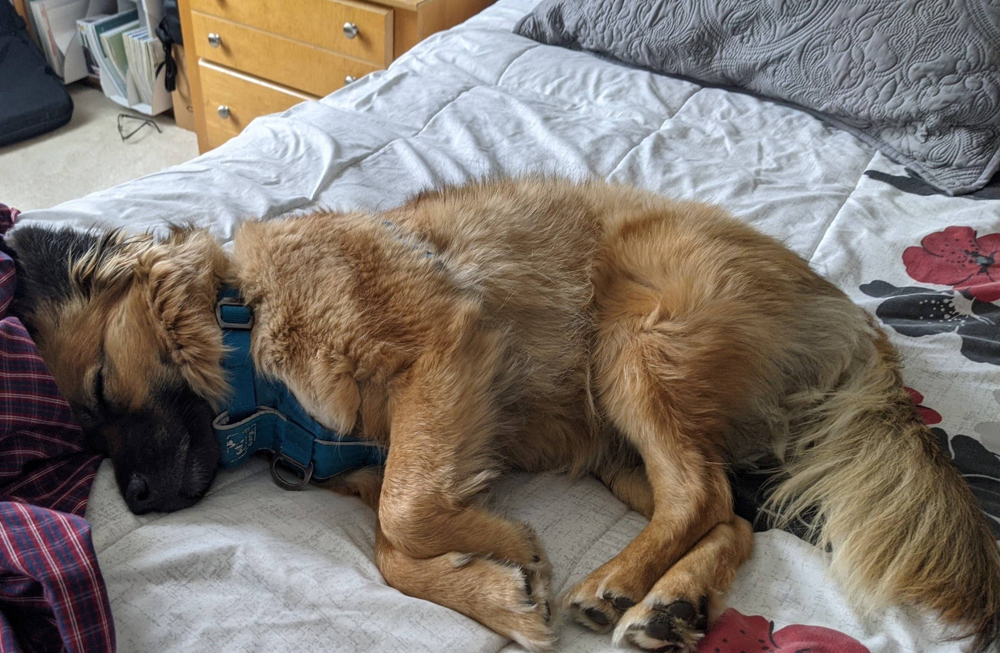
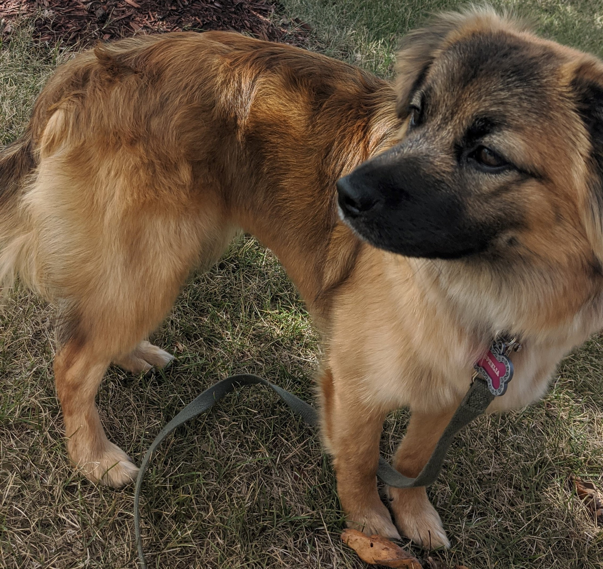
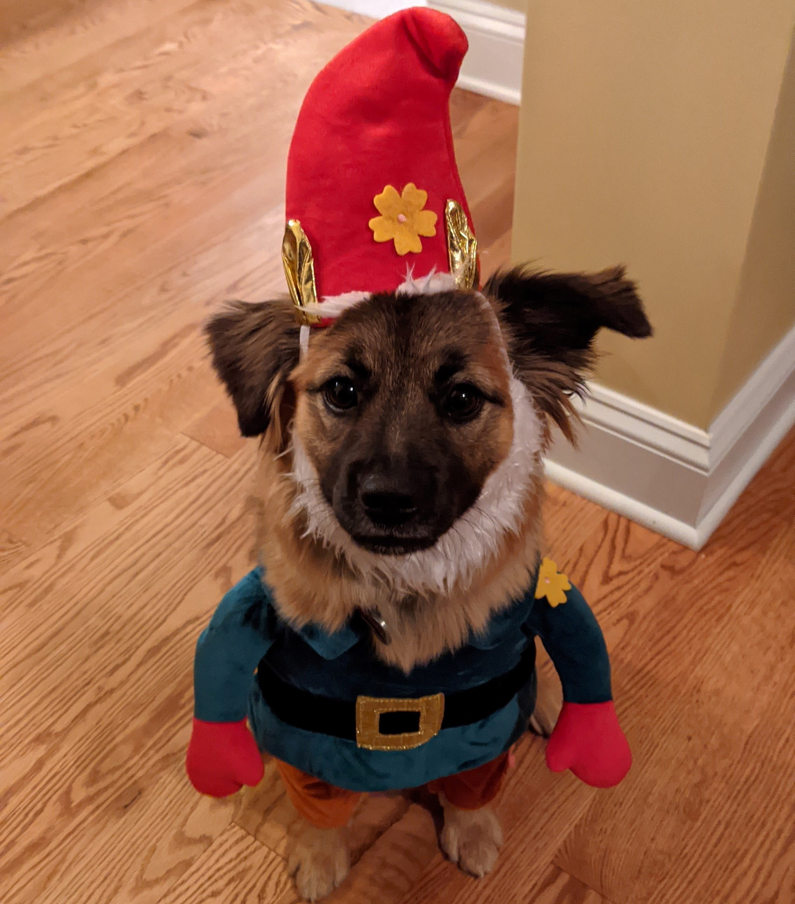
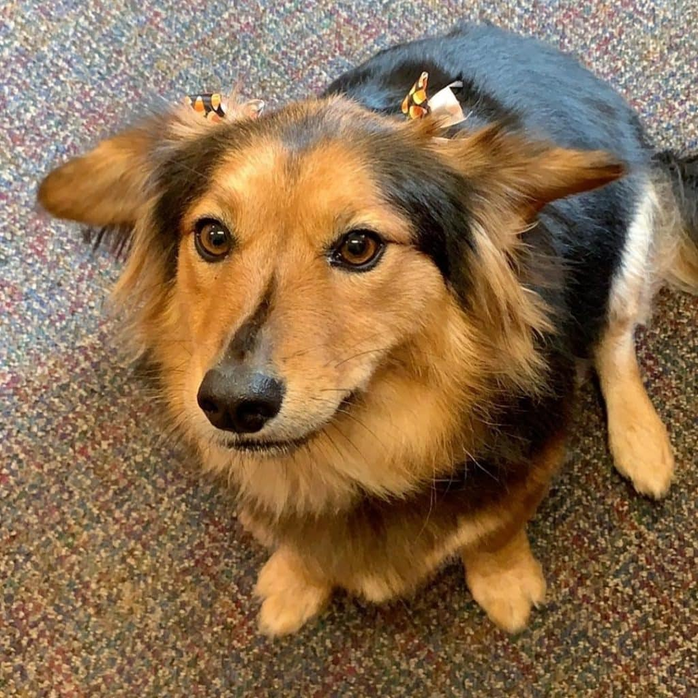
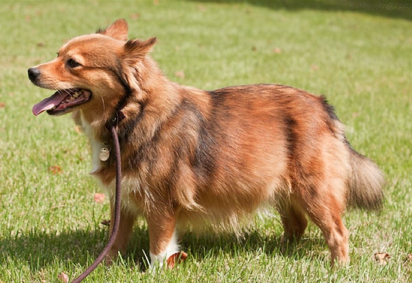
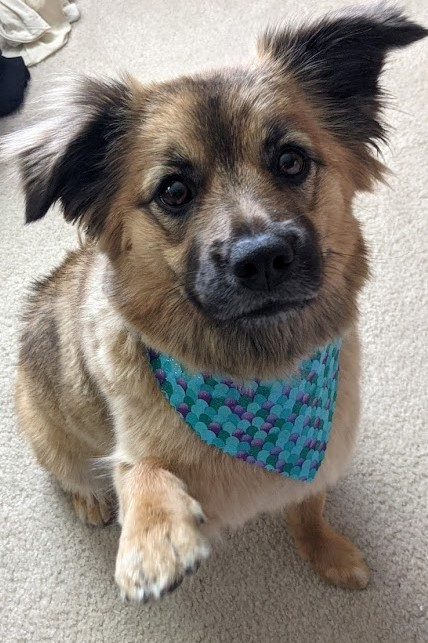

This question has haunted me since adopting her in the summer of 2020. This is Ophelia, my very friendly and gorgeous dog. I remember seeing her picture on AdoptAPet.com and thinking, "I wonder what breed she is. Better remember to ask when I visit her."
Spoiler Alert: I forgot to ask.
This may not be widely known but this causes identity issues within Ophie. She doesn't truly know who she is or where she caem from. Everyone deserves to know where they come from. So, I ask this question not for myself but for her.
Okay, also so I don't seem like a bad owner whenever a fellow dog owner asks me what breed she is. It's embarassing and I feel like Dog Protection Services will take her from me.
Anyway, you may already have an answer but that's not the point. This is obviously an excuse for me to show pictures of my dog and other dogs that are not as cute as her but look like her. So the following are potentially what breed my dog is. I will also rate the dog used in the sample photo by how cute they are compared to Ophelia.

Off to a pretty weak start. I tried this app that guesses your dog's breed and it gave a 20% chance that she was part Norwegian Elkhound. Makes kinda sense. The body shape is about the same, including the tail. I only express doubt in its fur. Compare it to Ophelia.
Like I said, similar body shape, but obviously different type of fur. Overall, a fair chance of having these 'hound' genes. Would not mind having this dog either.
Rating: 11/10 - Would enjoy an elkhound to bring me elk and still looks like it has nice fur coat.
So this was the other part that the app thought was in my dog's genes. The fur from this one on the elkhound's body? Definitely possible. As cute as my Ophelia? Absolutely not. But respect for maintaining an elegant coat. Now lets compare to Ophelia in a similar stance and environment.
Rating: 10/10 - All it has is the fur and color but way to big. Still gets at least a 10 just for being a dog.

I know this seems absurd, but hear me out. This theory comes from the fact that I had this video sent to me by a relative. If you follow the link to the video, this person's video is tagged #pomeranion like probably 5 times. I actually spoke to the person by commenting on their video because you cannot deny the resemblance. They confirmed that their dog is a pomeranion mix and they saw some videos of mine and theorize that my Ophelia must also be. That is about as much information as I needed to believe it at least a little. Also, this photo of Ophie running kind of gives a Pomeranian shape.

Almost uncanny.
Rating: 13/10 - Too small for me but undoubtedly adorable. Would stuff one in my coat for extra warmth. Also, increases value of my dog I think. Not that I would sell her or anything...
I can already hear you: "But these went extinct hundreds of years ago!" That's what I thought too! However, an absolute crazy thing happened one day near the end of October on Halloween 2020.
There I was waking up on an extra spooky day ready to greet my dog like every other morning. She usually lays near my feet but when I look at my feet all I see is this:
Absolutely uncanny.
Rating:-100/10 - Gave me trust issues and worsened my ever increasing fear of gnomes.
Hopefully I'm wrong about the horrifying possibility of gnomes being back and perhaps this is the true answer. Now,I know after all these other theories that this seems even less likely than gnomes returning from extinction, but I do not mean pure sheltie like the one above. I mean what results from searching 'Sheltie Mix" in Google:
  Yeah, you're probably right. I'm leaning more towards her being a gnome in disguise.